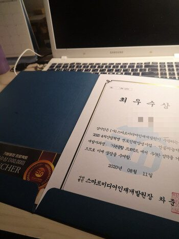

20대 중반의 비상경계 문과생입니다.
대학교에서 주전공과 복수전공 모두 취업과는 직접적인 관련이 없는 학문들을 선택했습니다.
배우고 싶고, 하고 싶었던 공부였기에 행복하게 공부하였지만 졸업을 앞두고서는 조금 후회했습니다.
'복수전공이라도 하기 싫지만 직업이 되는 공부를 할 걸, 앞으로 대학원을 가서 연구원이라도 해야할까?'
답답한 마음에 갔던 취업상담에서는 취업노선을 찾아주긴 커녕 공무원 할 거 아니면 왜 그랬냐고 혀를 차셨습니다.
앞이 깜깜하던 나날 중에 학교에 스마트미디어인재개발원 홍보팀이 찾아왔습니다.
대표적인 4차산업인 빅데이터, 인공지능, IoT를 배울 수 있고, 누구나 무료로 배울 수 있다면서요.
취업준비생에게 돈을 내고 듣는 강의가 아니라, 오히려 돈을 받으면서 배우는 강의라는게 믿기지도 않았습니다.
컴퓨터 게임은 좋아하지만, 전공도 경험도 컴퓨터 개발이랑은 완전히 동떨어진 내가 저런 것들을 배울 수 있을까?
반신반의하며 정말 배울 수 있는지 여쭤봤던 질문엔, 대학교 졸업예정자라면 참여할 수 있다는 대답을 받았습니다.
당시 3학년이었던 저는 1년을 기다려 졸업예정자가 되어 스마트미디어인재개발원에 전화를 드렸고,
수강신청자가 되어 수강생이 될 수 있는 면접의 기회를 받았습니다.
면접 당일, 심사위원으로 계신 원장님이 제 전공을 들으셨을 때 하셨던 말이 기억납니다.
'사회학도의 관점에서 데이터를 볼 수 있다는 건 개발에 큰 역할을 할 것 같다. 훌륭한 인재가 될 것 이다.'
취업에 있어 유별났던 제 전공이, 특별해질 수 있던 건 그 말부터였습니다.
면접 이후 한 번의 테스트를 통해 수준을 확인받은 뒤, 선발되었고 수업에 참여하게 되었습니다.
'기본 지식이 없어 수업을 잘 따라가지 못하면 어쩌지?'라는 걱정은 수업 일주일만에 사라졌습니다.
30명의 수강생들 모두의 사전지식과, 학습속도가 동일하지 않단 걸 고려한 수업이 이뤄졌고
쉬는 시간에도, 수업이 모두 끝나 퇴근할 시간에도 도움이 필요한 학생이 있다면 남아서 가르쳐주셨습니다.
심지어 개인적으로 공부할 수 있는 교재들 또한 무료로 받았고, 코로나의 심각도가 격상한 상황에서는 원격강의로, 또 강의를 녹화까지해주셔서 자택에서 수업을 듣는 데도 전혀 지장이 없었습니다.
수강한지 3개월 밖에 안 됐지만 저는 Python과 머신러닝, Java Eclipse, Oracle 데이터베이스와 AWS 사용, Web, Android Studio 등.. 정말 많은 것들을 수업을 통해 배웠고 프로젝트에 배운 것들을 활용하여 1차 프로젝트에서 최우수상을 받았습니다. 좋은 기업의 임원님과 KAIST 인공지능 교수님, 국립대학교 교수님의 초청강연도 들었고, 이 와중에 정보처리기사 필기시험까지 합격하여 실기시험을 앞두고 있습니다. 평범하게 대학교만 다니고 있었다면 정말 꿈도 꾸지 못했을 것들이 제게 일어났습니다.
올해 코로나 바이러스로 대학교 수업조차 제대로 듣기 어려운 지금 이렇게 많은 것들을 배우고, 좋은 사람들을 만나고, 더 나은 발전을 이룰 수 있다는 게 정말 다행이고, 감사합니다.